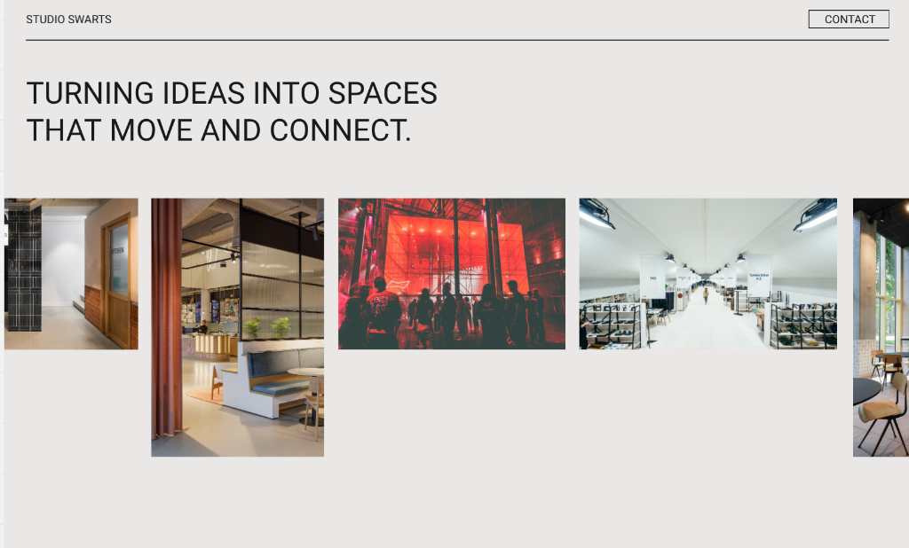
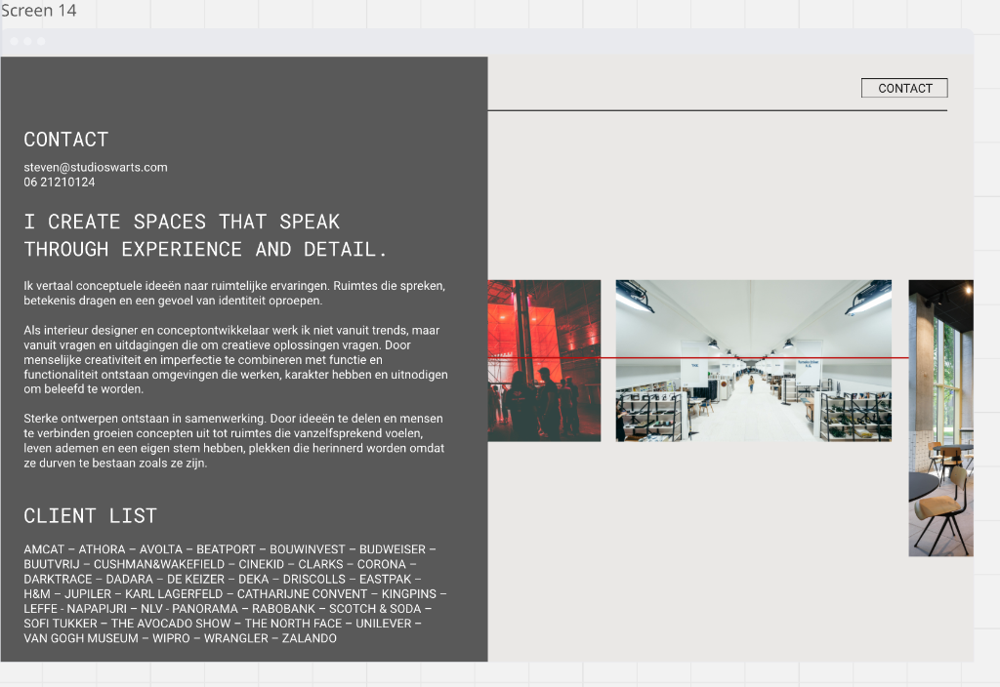

TURNING IDEAS INTO SPACES
THAT MOVE AND CONNECT.


steven@studioswaarts.com
06 21210124
Ik vertaal conceptuele ideeën naar ruimtelijke ervaringen. Ruimtes die spreken, betekenis dragen en een gevoel van identiteit oproepen.
Als interieur designer en conceptontwikkelaar werk ik niet vanuit trends, maar vanuit vragen en uitdagingen die om creatieve oplossingen vragen. Door menselijke creativiteit en imperfectie te combineren met functie en functionaliteit ontstaan omgevingen die werken, karakter hebben en uitnodigen om beleefd te worden.
Sterke ontwerpen ontstaan in samenwerking. Door ideeën te delen en mensen te verbinden groeien concepten uit tot ruimtes die vanzelfsprekend voelen, leven ademen en een eigen stem hebben, plekken die herinnerd worden omdat ze durven te bestaan zoals ze zijn.
AMCAT – ATHORA – AVOLTA – BEATPORT – BOUWINVEST – BUDWEISER – BUUTVRIJ – CUSHMAN&WAKEFIELD – CINEKID – CLARKS – CORONA – DARKTRACE – DADARA – DE KEIZER – DEKA – DRISCOLLS – EASTPAK – H&M – JUPILER – KARL LAGERFELD – CATHARIJNE CONVENT – KINGPINS – LEFFE – NAPAPIJRI – NLV - PANORAMA – RABOBANK – SCOTCH & SODA – SOFI TUKKER – THE AVOCADO SHOW – THE NORTH FACE – UNILEVER – VAN GOGH MUSEUM – WIPRO – WRANGLER – ZALANDO